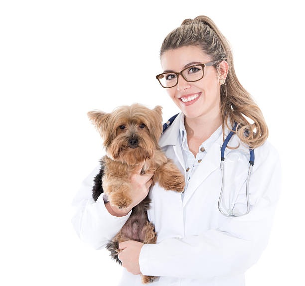

Welcome to Lovely Pets Veterinary
Welcome To Lovely Pets Veterinary - Queensland's leading veterarian group, proving premium care for your pets.
Our teams at Lovely Pets Veterinary are ‘passionate about pets’ and love what we do. We understand and value the bond between you and your pet, and we are committed to offering exceptional service, and the very best in veterinary medicine.
All Lovely Pets practices offer a comprehensive array of professional veterinary services to cater for all your pet care needs utilising the latest diagnostic equipment.
